Introducing BlockBirds!
BlockBirds is a one-man NFT project comprised of 1111 (mostly) programmatically generated unique and original gifs of cute, fun and sometimes edgy, pixel art baby birds.
Inspired by past programmatic NFT art projects, I´m trying to bring new things to the table to make BlockBirds something memorable, profitable and hopefully long lasting.
I believe the success of a NFT project is not only about selling all tokens fast, but instead directly proportional to the success of its secondary market.
That's why my main goal is to develop a long-term healthy secondary market from which every BlockBirds hodler and trader could benefit.
Yes, this is an art project at heart, but I'm also putting emphasis on the "Token" part of "NFT".
---BlockBirds Official Store at Opensea: BlockBirds.
---BlockBirds Official Twitter account: @BlockBirdsNFT.
Grab one BlockBird before they all fly away! ('cause they will).
Specs
All artistic and programmatic aspects of BlockBirds were envisioned and developed entirely by me.
In order to provide more variety, some BlockBirds were programmatically generated while others were drawn 100% by hand.
Some others incorporate aspects of both methodologies.
All Blockbirds come in a 320x320px gif format composed of 9 150ms frames, suitable for use as profile pic or avatar in many applications.
BLOCKBirds live, as their name states, as tokens in the Ethereum BLOCKchain.
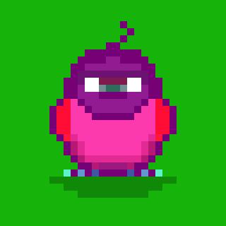

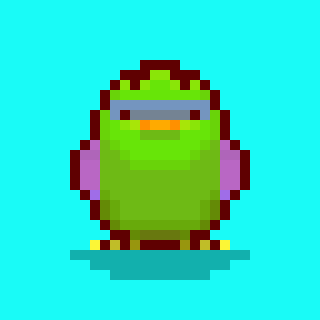
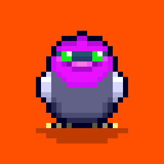
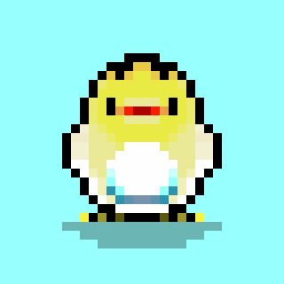
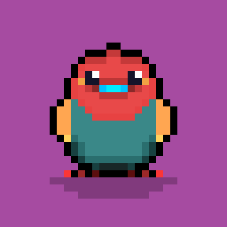
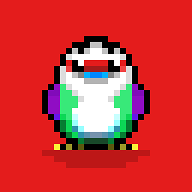
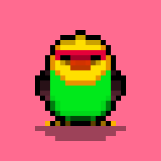
Attributes
Attributes will provide each BlockBird a distinct degree of rarity:
- Season (see Future plans): All current 1111 BlockBirds will be labeled as "Season 1"
- Nature: Pure Breed (extremely rare), Mixed (common), Radioactive (rare), Mutant (extremely rare), Alien (extremely rare), Cyber (?)
- Habit: Diurnal, Nocturnal, Crepuscular
- Personality: Cute, Amused, Bored, Sleepy, Hollow, Evil...
Examples
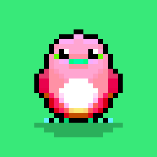
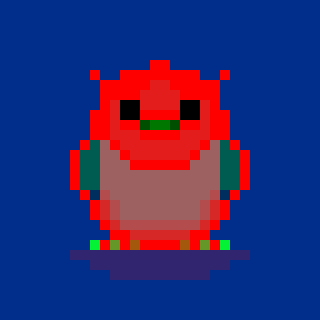
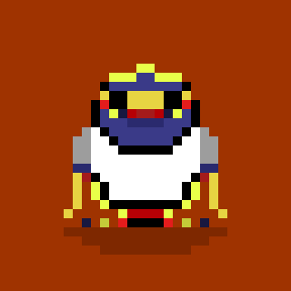
#332
Season: 1
Nature: Mixed
Habit: Diurnal
Personality: Cute
#121
Season: 1
Nature: Radioactive
Habit: Nocturnal
Personality: Evil
#1011
Season: 1
Nature: Mutant
Habit: Crepuscular
Personality: Hollow
Tokenomics
Ownership
Once you purchase one of the 1111 BlockBirds, you will be the only person in the world that owns it.
Also, you will be able to do whatever you want with it: hodl it, sell it for a profit, trade it for other BlockBird (or NFT), give it away... it's entirely up to you!
Pricing
Update: Bonding curve has been ditched in favor of a more secondary market-friendly pricing system (see tweet HERE).
- 1-20 mints: 0 ETH - Fully generative pieces. You lucky bastards!
- 21-170 mints: 0.01 ETH - Transition from generative to hand made project. Thanks for the trust and support at such early stage!
- 171-1111 mints: 0.015-0.02 - Fully hand made project. More animations, refined pieces, new backgrounds, exploring many concepts... still PLENTY of room for profiting from your birds!
Tips and tricks! (succeeding at BlockBirds)
- The sooner you buy, the highest profit potential (if you are thinking on flipping)
- As with many projects of this kind, popularity is critical: more popularity = more demand = higher secondary market prices. In other words, you could sell at a higher price. In order to increase popularity, you simply can:
- Use Blokbirds as profile pics
- Use the #BlockBirdsNFT hashtag
- Comment and Retweet BlockBirds related posts regularly (I will be doing that with as many posts as I can find. Also, I will retweet EVERY purchase you tweet [tag me]).
- Just spread the word
- Reasonably price your BlockBirds according to the market. (Or not. Anything can happen in this space).
Future plans
Seasons
Im really committed to this project long-term.
So, depending on its initial success, I'm planning on launching more seasons, divergent enough from the formers so the uniqueness of each one is kept intact.
That means new designs, animations, backgrounds, all within a similar theme, tho.
In order to easily differentiate between BlockBirds from different season, all initial 1111 BlockBirds will be labeled as "Season 1".
In fact, most certainly BlockBirds from earlier seasons will become even more valuable in the long run.
However, the start of a new season won't occur until ALL BlockBirds from the current season are sold (and new ones are generated).
I will be paying close attention and crunching numbers of Season 1 in order to improve on the next seasons (community feedback is much appreciated!).
We together may find new ways of modeling and implementing bonding curves as well as fine-tuning other variables on this novel market for the benefit of all!
About
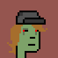
I am a bioinformatician by training (got my PhD in May 2021!).
I love pixel art and everything crypto related.
NFTs are fun and this space is awesome.
You could also check my genesis, more science inclined, NFT project on OpenSea at Encrypted Viral Genomes.
Maybe come say hello on my personal Twitter account @defaultmnl someday.